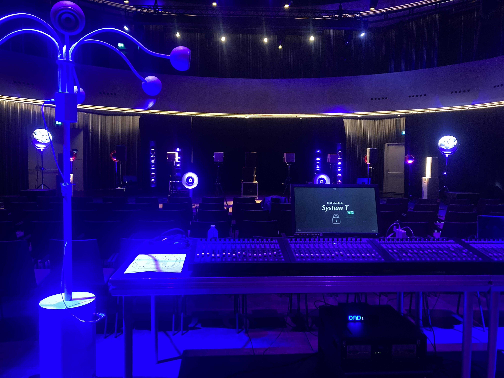

2026_Form<>Collapse_a composition for the GRM Acousmonium, diffused on the system during the 200 years Royal Conservatory The Hague festival at the Conservatoriumzaal in The Hague.
The composition is processed through a Supercollider patch designed/inspired by the Third-octave filter. A recording of the Sustained Piano is compressed into a mono file and processed through a SuperCollider patch that deconstructs and recomposes its spectral and polyrhythmic dynamics. The sound file passes through a 12-channel bank of bandpass filter with varying centre frequencies beginning at 60 Hz. Each band is independently modulated by a random LFO, producing slow amplitude variations that cause individual frequency bands to move in and out of audibility. A random delay line is assigned to each band at the moment of triggering, displacing it from the global pattern before it is redistributed across the timeline. The original patch was designed for an eight-channel loudspeaker system. For the GRM Acousmonium, the eight-channel output was embedded into a stereo file to participate in the system’s stereo-track diffusion methodology.
modified Bruel - Kjaer third-octave filter installed in the Voltage Control Studio at the Institute of Sonology
GRM Acousmonium loudspeaker configuration at the Conservatoriumzaal, Royal Conservatory The Hague. The diffusion is mapped out over three scenes through the allocation of speaker groups (fig. 2) and a movement trajectory through frontal (1, 2, 30, 34) and vertical extension (9, 10, 29, 30), to side-mid (30, 34, 9, 10) expansion (31, 32, 25, 26, 27, 28), to central enclosure (1-8, 9-16, 41, 42).

GRM Acousmonium Front of House diffusion, concert night